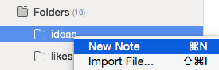
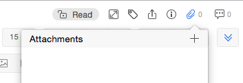
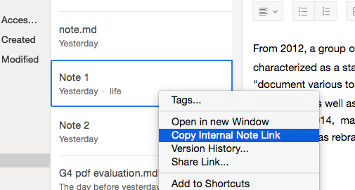
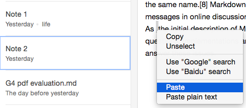
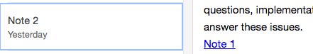

Empty Note
- Right-click one of your folders.
 - Click "New Note" on the top bar.
Tips on editing note:
- You can add a Word or PDF file to your note.
 - Add an internal link.
- Right-click Note 1 on the center bar and copy its internal link by
clicking "Copy Internal Link".
 - Paste it onto Note 2.
 - Note 1 is linked to Note 2.

- Right-click Note 1 on the center bar and copy its internal link by
clicking "Copy Internal Link".